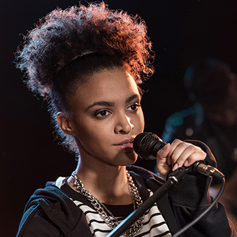
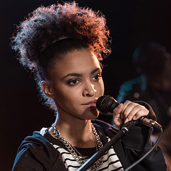

The Band består fortsat af de fire oprindelige medlemmer. Vi har
spillet sammen i mere end ti år og det betyder at vi kender
hinanden rigtig godt. Det er en fordel både i studiet og på scenen
at vi kender hinandens små finurligheder.
Alexander er vores bassist og lidt af en practical joker. Så hvis
kaffen smager salt eller mælken er blå, så er det stensikkert
Alexander der har været på spil.
Yasmin spiller trommer på lille del af vores numre og er sanger på
de andre. Yasmin har altid sunget og hendes stemme er næsten
synonym med The Band.
Kristine er gruppens guitarist. Det er også Kirstine som synger kor
på de fleste af vores studieindspilninger. Kristine er også gruppens
barista - hun ved bare alt om kaffe!
Johan er gruppens trommeslager. Han stjæler dog af og til
mikrofonen fra Yasmin, når de allermest rockede numre kræver
hans rå vokal.


 
